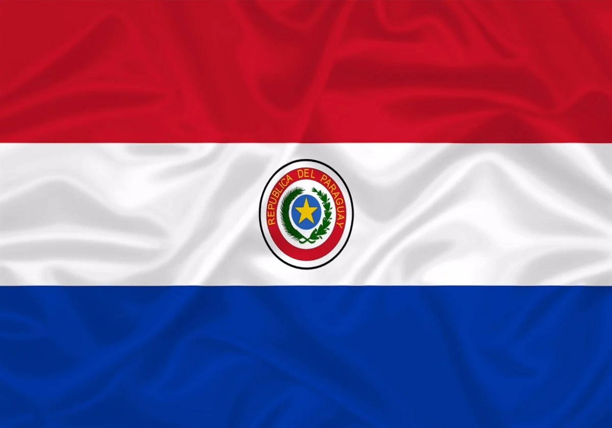

O Paraguai foi colonizado pelos espanhóis no contexto das Grandes Navegações, juntamente com outras nações sul-americanas. Em 1515, Juan Díaz de Solís descobriu a região, que era habitada por índios guaranis. Em 1537, os espanhóis fundaram Nossa Senhora da Assunção, em busca de ouro. A colónia foi administrada juntamente com outras colónias espanholas na região, como o Peru e a Argentina. O Paraguai só se tornou independente em 1811.
O futebol é o desporto mais praticado no Paraguai e é considerado uma parte importante da identidade cultural do país. Os dias de jogos são eventos comunitários, com festividades e celebrações. O futebol também tem um impacto económico significativo, gerando empregos.
A culinária paraguaia tem fortes influências indígenas e é baseada em produtos agrícolas e carnes.
Ao lado do castelhano, o guarani é língua oficial do Paraguai, desde 1992, mas demorou 20 anos para ser regulamentada. “O guarani é uma língua que esteve em todo momento e continua estando na vida dos paraguaios.
Localizado na linha do Trópico de Capricórnio, no Paraguai existem três climas: predomínio do clima seco nas regiões Norte e Nordeste; clima tropical na parte central do país; clima subtropical na região sul.
O Paraguai é um país da América do Sul com uma população de 7.133.000 habitantes, onde a religião predominante é o cristianismo, com 97% da população a praticar. O catolicismo é a religião predominante, com 86% da população a ser católica, e o Paraguai é o único país latino-americano onde o catolicismo ultrapassa os 85% da população. O Paraguai também tem uma percentagem de protestantes (6,2%) e outras religiões (3,3%). 1% da população é ateia e 2% pratica outras religiões.